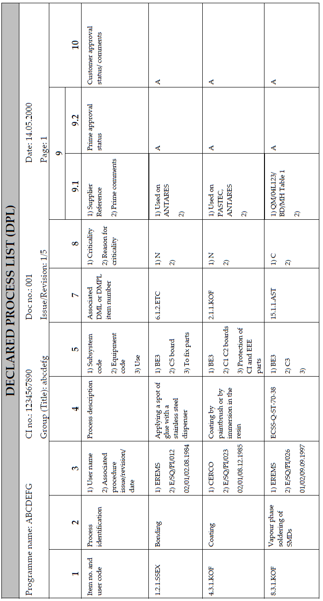

DRD-07.07 - Declared Process List (DPL) |
| Reference: |
ECSS-Q-ST-70C |
Space product assurance - Materials, mechanical parts and processes |
| ECSS-Q-ST-70-02C |
Space product assurance - Thermal vacuum outgassing test for the screening of space materials |
| ECSS-Q-ST-70-04C |
Space product assurance - Thermal testing for the evaluation of space materials, processes, mechanical
parts and assemblies
|
| ECSS-Q-ST-70-06C |
Space product assurance -Particle and UV radiation testing of space materials |
| ECSS-Q-ST-70-21C |
Space product assurance - Flammability testing for the screening of space materials |
| ECSS-Q-ST-70-29C |
Space product assurance - The Determination of offgassing products from materials and assembled articles
to be used in a manned space vehicle crew compartment
|
| ECSS-Q-ST-70-36C |
Space product assurance- Material selection for controlling stress-corrosion cracking |
| ECSS-Q-ST-70-37C |
Space product assurance - Determination of susceptibility of metals to stress-corrosion cracking |
| ECSS-Q-ST-70-71C |
Space product assurance - Data for selection of space materials and processes |
| Purpose: |
To provide a common and complete list of all processes the P/L is made of. The DPL shall be
consolidated by the contract holder on the basis of data obtained from his sub supplier and shall
reflect the current design at the time of issue. The data in the DML make possible to assess whether the
processes are suitable for a specific application.
|
| Content: |
DPL shall be broken down into clear categories to facilitate locating each item in the
documentation.
The DPL shall include the following:
- item number (as the reference of the process in the DPL),
- process identification,
- process specification,
- process description,
- use and location,
- process supplier/manufacturer's name,
- associated DML items,
- criticality of process,
- approved status (with reference to the approval authority and to test data).
Use of codes: any coding or acronyms used within the list shall be defined within the DPL.
|

Contents of the Declared Process List (DPL)
Process groups:
Processes are classified into 17 groups depending on their type or their main use:
- Adhesive bonding
- Composite manufacture
- Encapsulation/moulding
- Painting/coating
- Cleaning
- Welding/brazing
- Crimping/stripping/wire wrapping
- Soldering
- Surface treatments
- Plating
- Machining
- Forming
- Heat treatment
- Special fabrication: processes developed specifically for the programme
- Marking
- Miscellaneous processes
- Inspection procedures.
If for a given project it is considered necessary to create new groups, these shall have numbers over 17.
The process list consists of 10 columns which shall be completed as indicated below. If a particular item does not
apply, write N.A. (Not Applicable).
Processes which apply to, only one material (one DML item) and which are sufficiently defined in column 5 of the DML
should not appear in the DPL (unless they are critical).
COLUMN 1: Item number
This consists of the process identifier and the user code. It takes the form of e.g. "1.2.1.SSEX"
Characteristics of the item number are:
- The sub supplier shall be identified by an agreed code for the project.
- One only per process type.
- Does not change during the life of the process list.
COLUMN 2: Process identification
The correct and standard identification of the process shall be indicated, e.g. the process name or title: bonding,
coating or soldering.
COLUMN 3: Specification
The name or abbreviation of the process executor shall be identified. A reference shall be made to the associated
procedure, e.g. national, international, EN, ISO, ECSS or company in-house, together with the issue, revision and
date.
COLUMN 4: Process description
A short description of the process shall be entered.
COLUMN 5: Use and location
The codes entered shall define the location of the process with respect to the:
- subsystem,
- particular piece of equipment (box or item),
- use of the equipment (e.g. a structural element, thermal control, electrical insulation).
COLUMN 6:
This column number is not used.
COLUMN 7: Associated Items number
The associated material list (DML) or mechanical parts list (DMPL) with the process shall be entered.
COLUMN 8: Criticality
Enter "C" for critical or "N" for non-critical.
If a process is considered to be critical, references to the relevant RFA shall be entered.
COLUMN 9.1: Supplier reference, prime comments and approval
The purpose of this is to enter any additional information that may be necessary in order to achieve customer's
approval. This information comprises reference and issue of the RFA / approval, processes justification file,
evaluation reports and waivers. These documents must be made available to customer on request.
COLUMN 9.2: Supplier's approval
The supplier reference and approval columns shall be used to enter any additional information that can be necessary
to obtain customer approval.
The supplier approval status code shall be selected from Table.
| Code |
Description |
| A: |
Approved. All processes classified "A" may be used without restriction. |
| X: |
Approved with a RFA. These processes shall be subjected to an evaluation or validation programme. The
RFA number shall be entered as a comment.
|
| W: |
Approved with a concession. These processes do not meet the requirements but are used for functional
reasons. The use of such processes shall be reduced to a minimum. All deviation requests shall be
approved by the customer. The concession number shall be entered as a comment.
|
| P: |
Pending a decision. Processes for which an evaluation report or a concession is waiting for the
supplier´s provisional or definitive approval.
|
| O: |
Open. New processes or processes for which investigations and validations are in progress. |
| R: |
Rejected. |
| D: |
Deleted. This classification is used for a process that is no longer used . |
| If approval cannot be given and one of the other codes are entered, comments shall be
entered in the
appropriate column.
|
COLUMN 10: The customer approval status code and comments
This code shall be selected from table. Additional comments shall be included where appropriate.